- 1.Introduction
- 2. Variables
- 3.Data types
- 4.Operators
- 5.Conditional_stmts
- 6.I/O_Operations
- 7.Iterative_stmts
- 8.Functions
- 8.1.Arguments
- 9.Sequences
- 10.Modules
- 11.Oops_Introduction
- 11.1.Methods
- 11.2.Inheritance
- 11.3.Polymorphism
- 11.5.Encapsulation
- 12.lambdas
- 13.Exception_Handling
- 14.File_Handling
- 15.Multi_Threading
- 16.Iterators_generators
- 17.Database_Management
Taking input in python:
1)To take input in python we use input() function.
ex: name = input('Enter your age')
2)By default the input value accepted will be a string.
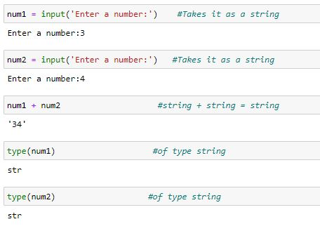
3)To take the values of other datatypes, we explicitly type cast the input value into required datatype.
Type casting:
1)Type casting is the process of converting the value from one datatype to another.
2)For type casting syntax is.
name_of_datatype_you_want_to_convert_value_into()
3)To typecast into int, we use int() function.
4)To typecast into float we use float() function.
5)To typecast into string we use string() function.
Example for type casting.
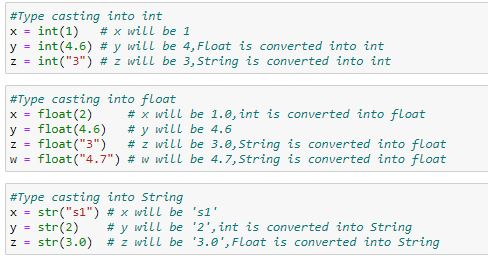
6)Coming back to input() function, by default we have the value as String.
7)To take integer value as input we typecast it to int as follows:
value = int(input('Enter an integer')).
8)To take float value as input we typecast it to float as follows:
value = float(input('Enter a floating point value'))
Examples for typecasted input values:
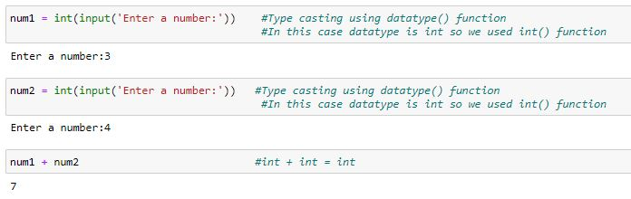
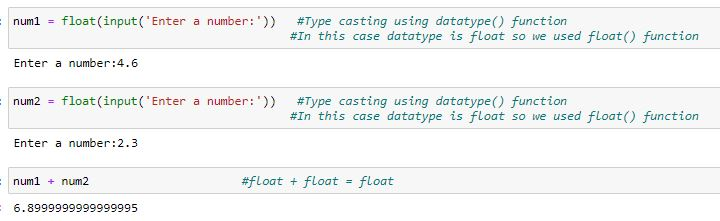
Alternative for typecasting:
1)There is a function called eval().
2)eval() automatically detects the data type and converts value into required datatype.
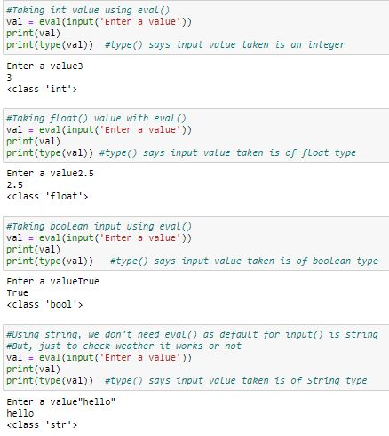
print() in python:
1)Used to print the given message or a value.
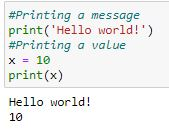
2)print() is a built-in-function meaning pre-defined function that comes with python.
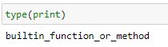
3)Creating vertical spaces using print().
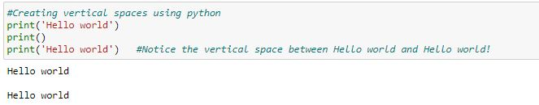
4)We can use either "" or '' in print() statement.Just incase we want to print "", then we can use '', in our print() statement and vice-versa.

Notice the output has ""
5)sep paramenter is used to add a character in regular values in print() function.
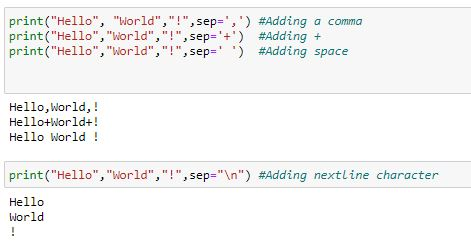
6)% is used as place holder meaning to add a value of other datatype with our message.
%d is used as a placeholder for numeric or decimal values.
%s is used as a placeholder for strings.
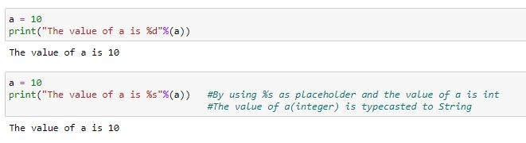
7)By Using format parameter.The repeated content in message need not to be typed again and again..!
This is how you can do it
{} acts as placeholder.
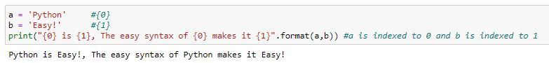
8)To display multiple values.
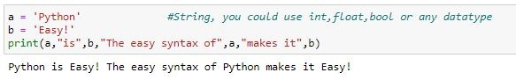
9)To add a message at the end we set the end parameter.
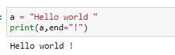